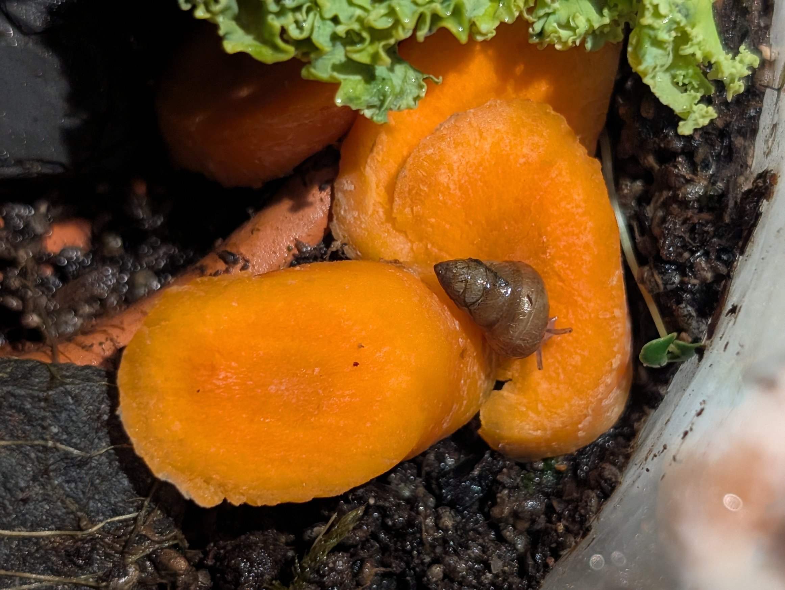
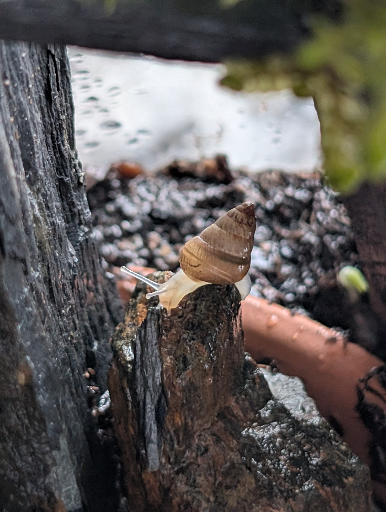
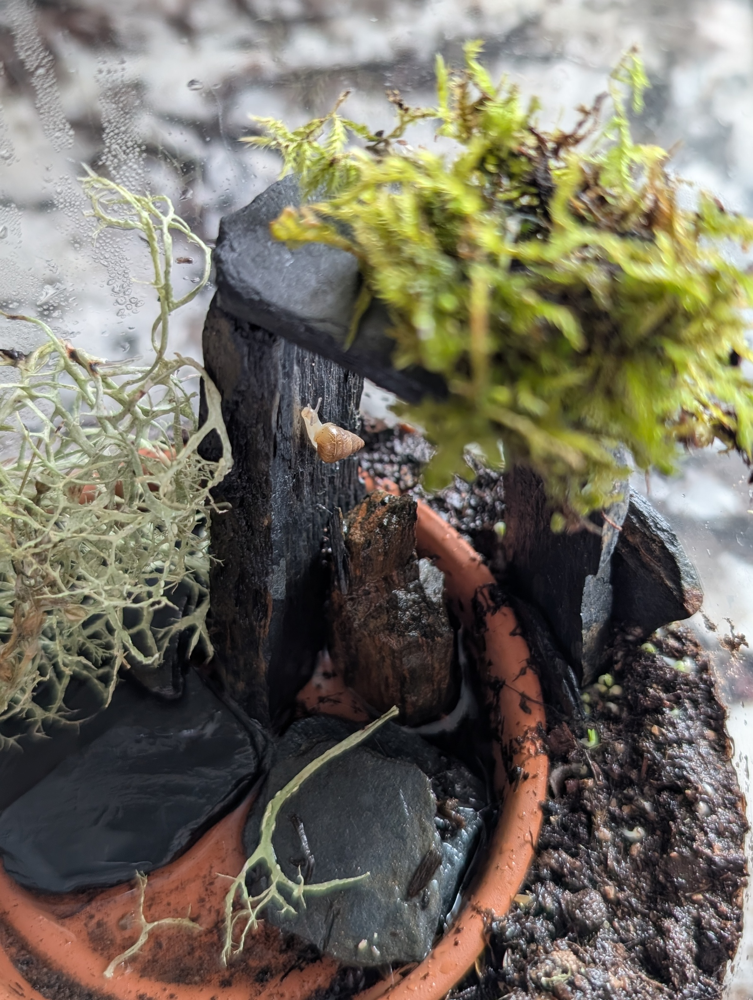
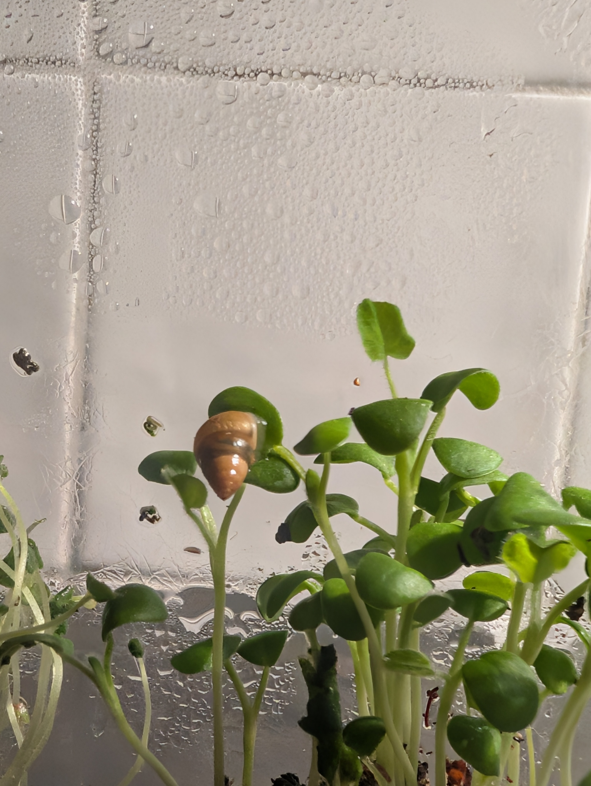
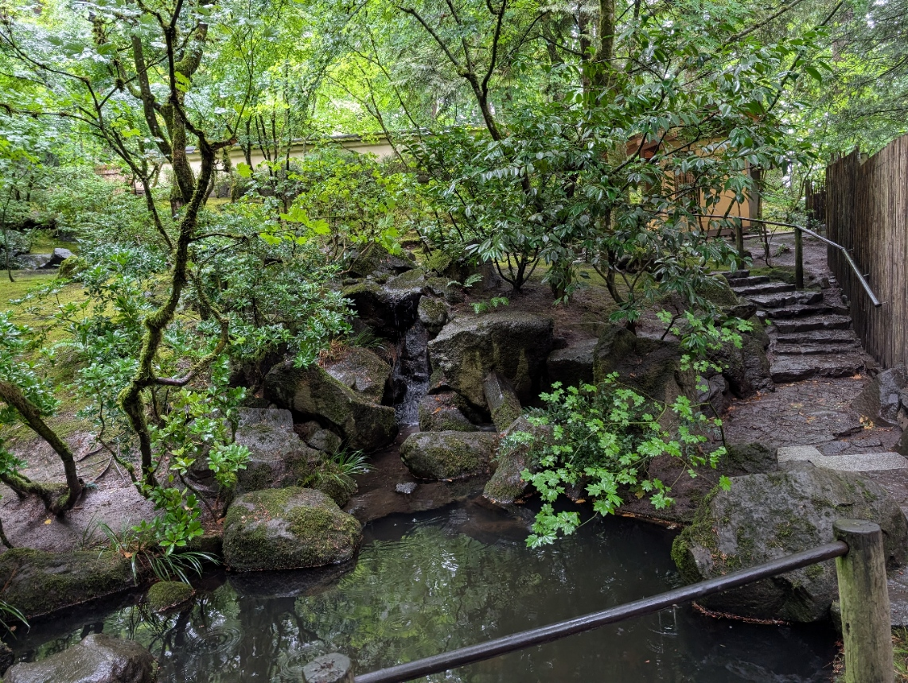
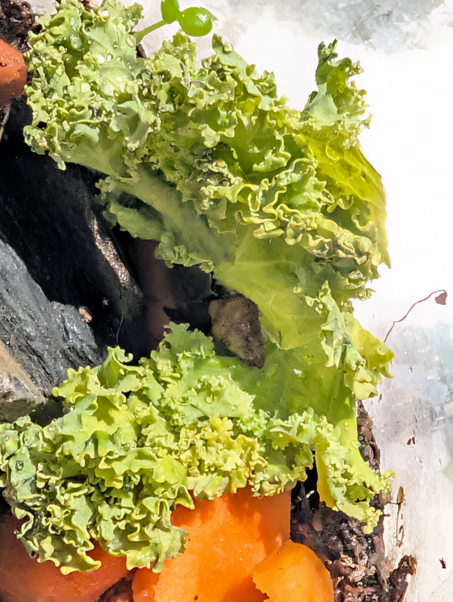

Carrot
The gold standard.
Sweet, crunchy, and a color you can spot from across the enclosure. Sammy will travel farther for a carrot than for anything else. He leaves a neat, satisfied trail every time.
A small snail with a big appetite for adventure, and an even bigger one for carrots.

Sammy started life as a stowaway, tucked inside a bundle of fresh herbs. Today he is a full-time explorer and part-time food critic who will climb, taste, and investigate anything in his path. Leaves, rocks, moss, puddles: no environment is too strange, and no vegetable goes unjudged. Rainy days are his favorite days.
How a baby snail in a bunch of herbs became the most curious critter in the garden.
Sammy was first discovered as a tiny baby, no bigger than a lentil, curled up in a bundle of fresh herbs. Instead of being tossed out with the stems, he was scooped up, given a name, and welcomed home. He has been eating well ever since.

These days Sammy lives in an enclosure built for exploring. Live plants give him something to climb and snack on, a rock cave keeps him cozy, a small pond lets him cool off, and a soft patch of moss is his favorite place to rest after a long day of crawling.

Sammy has always dreamed of going somewhere damp and moist where he's free to roam. While small tastes of Seattle satisfy him now, it won't forever. His biggest dream is to spend a long, slow, drizzly day at the Portland Japanese Garden. He has heard it is one of the most peaceful gardens in the country, and for a snail who loves moss, stone, and water, it sounds like paradise.
When he gets there, Sammy plans to:

Honest opinions on snail-safe foods, rated out of five snails. Every food here has been personally tasted by Sammy.

The gold standard.
Sweet, crunchy, and a color you can spot from across the enclosure. Sammy will travel farther for a carrot than for anything else. He leaves a neat, satisfied trail every time.

A leafy all-rounder.
Hearty and full of calcium, which keeps Sammy's shell strong. The curly edges make it fun to climb, too. Loses one snail because it's a bit tough on the stems.
Cool and juicy, perfect after a hot Las Vegas afternoon. Mostly water, so it's a snack, not a meal.
Soft, mild, and easy to munch. A dependable weeknight dinner.
Best served thinly sliced. Tasty, but a slow chew even by snail standards.
Crisp and pleasant, but not very filling. Fine as a side salad.
An earthy surprise. Sammy went back for seconds, which is high praise.
Sweet like a carrot's cousin. Nearly made the top spot.
Grow veggies? Run a garden or a pet shop? Sammy is always taking new tasting requests, as long as the food is snail-safe. Send him a message and tell him what's on the menu.
Email mr.sammythesnail@gmail.com
Location Las Vegas, NV
Request a review